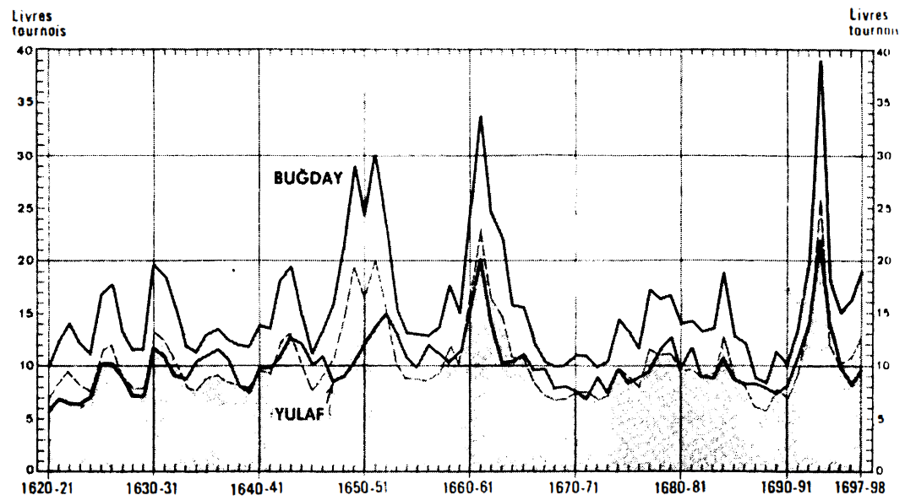
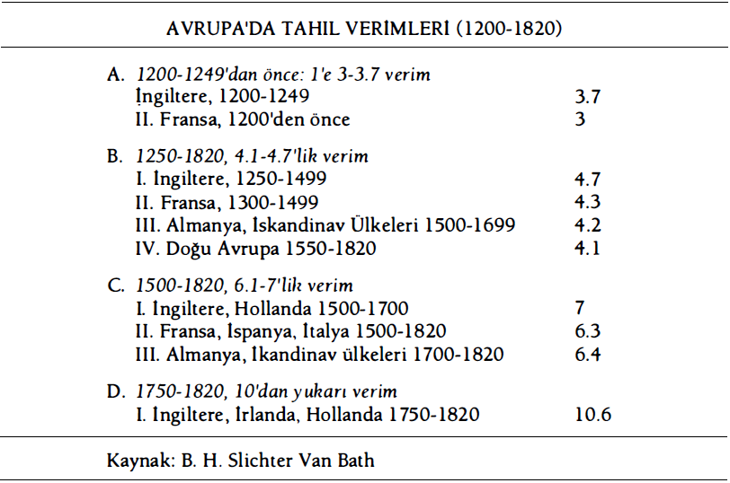
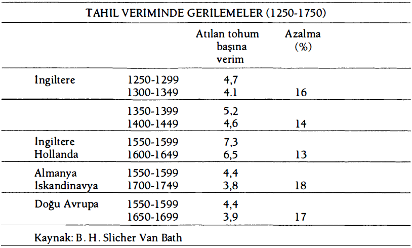
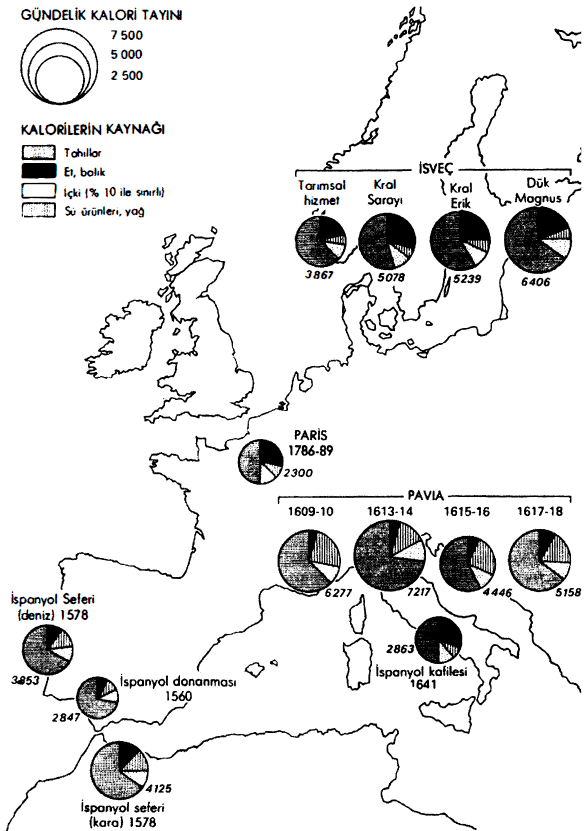
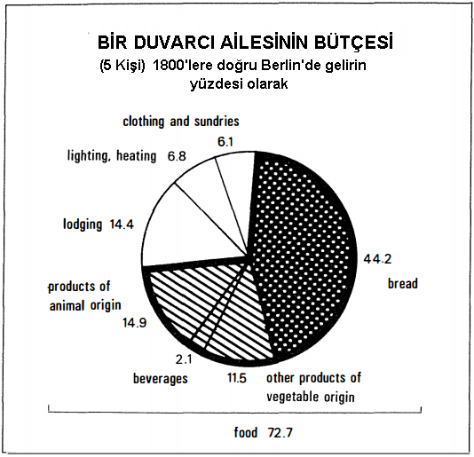
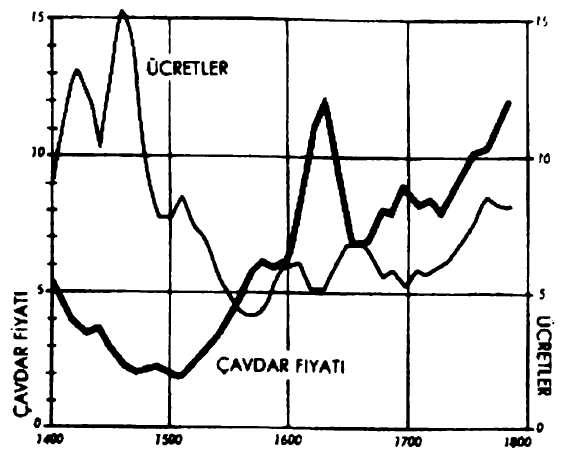
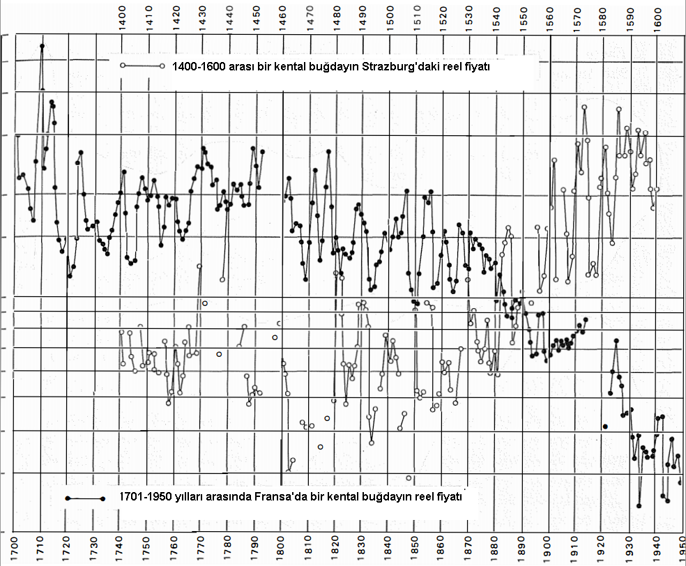

XV. ile XVIII. yüzyıllar arasında, insanların yiyeceği esas itibariyle bitkisel besinlerden oluşmaktaydı. Colombus öncesi Amerika için, Kara Afrika için aşikâr olan bu gerçek; Asya'nın dün olduğu gibi bugün de hâlâ pirince dayalı uygarlıkları açısından çarpıcıdır: Uzak Doğunun kalabalıklarının oluşmasını, sonra da seyirlik artışını yalnızca et kökenli gıdaların azlığı sağlamıştır. Oldukça basit nedenlerden ötürü: eşit bir yüzey üzerinde, bir ekonomi yalnızca kalori aritmetiğine göre kendi hakkında karar verdiğinde, tarım hayvancılığı fersah fersah aşmaktadır; çünkü tarım iyi kötü, rakibinden on, yirmi kat daha fazla insan doyurmaktadır. Montesquieu bunu pirinç ülkeleri hakkında önceden söylemiştir: “Başka yerlerde hayvanların gıdası için kullanılan toprak, burada hemen insanların geçimliklerinin üretimine yaramaktadır”.
Fakat her yerde ve yalnızca XV. ile XVIII. yüzyıllar arasıyla sınırlı kalmamak üzere, bazı düzeylerin üzerindeki nüfus artışı, bitkisel gıdalara vurgulu bir başvuruyu gerektirmektedir. Tahıl ile et arasındaki seçenek insanların sayısına bağımlı olmaktadır. Bu maddi hayatın büyük kıstaslarından biridir: “bana ne yediğini söyle, sana kim olduğunu söyleyeyim.” Kelime oyunu yapan Alman atasözü kendi tarzında ifade etmektedir: Der mensch İst was er isst (insan yediği şeydir). İnsanın yiyeceği onun toplumsal mertebesi, onu çevreleyen uygarlık, kültür hakkında tanıklık etmektedir.
Seyyahlar için bir kültürden bir uygarlığa, düşük bir nüfus yoğunluğundan nisbeten yüksek bir yoğunluğa geçmek (veya tersi), ciddi gıda değişiklikleri içermektedir. Moscovie Companle’nin ilk tüccarı Jenkinson, uzak Arhangelsk'ten gelerek, Moskova'ya 1558'de varmış, şimdi de Volga'dan aşağı inmektedir. Astrakhan'a ulaşmadan önce, nehrin kıyılarının ötesinde, “muazzam bir Nogay Tatarları kamp yeri”ni fark etmiştir. Bunlar “ne kentleri ne evleri” olan, çalan, öldüren, savaştan başka sanat tanımayan, ne toprak sürmeyi ne tohum atmayı bilen ve savaştıkları Ruslarla alay eden göçebe çobanlardır. Buğday yiyen ve gene buğday içen (bira ve votka tahıldan yapılmaktadır) bu Hristiyanlar (Ruslar) nasıl gerçek insanlar olabilirler? Nogaylar süt içip et yemektedirler, bu da tamamen başka bir şeydir. Yoluna devam eden Jenkinson, Türkistan çöllerini aşmış, burada açlık ve susuzluktan ölüm tehlikesi atlatmış ve Amuderya vadisine ulaştığında, içme suyu, kısrak sütü, yabani at eti bulmuş, ama ekmek bulamamıştır. Hayvan yetiştiricileriyle köylüler arasındaki bu farklar ve bu alaylar, bizzat Batı'nın göbeğinde, Bray ülkesi insanlarıyla Beauvaisis'in buğday yetiştiricileri arasında, Kastilyalılar ile Bearn'daki hayvancılar, yani güneylilerin keyifle alaya aldıkları, ama karşılığının da geçerli olduğu şu “inekçiler” arasında vardır. Bundan daha seyirlik olanı, Pekin'de daha iyi görülebilir, etleri Avrupa tarzında koca parçalar halinde yiyen Moğolların -daha sonra Mançuların- beslenme alışkanlıklarıyla, âdeta ayinsel olan mutfak sanatının, temeldeki tahıllara -fan- bir refakatçi -tsai- koymak zorunda olduğu, sebzeleri, sosları, lezzet unsurlarını (tuz, biber gibi) ve zorunlu olarak küçük parçalara ayrılmış biraz et veya balığı bilgince birleştiren Çinlilerin alışkanlıkları arasındaki zıtlıktır.
Avrupa'ya gelince, o bütünü itibariyle etoburdur: “Avrupa'nın miğdesinin etrafında bin yıllıktan fazla” olan “kasaplık vardır.” Avrupa Orta Çağın süren yüzyılları boyunca etin taştığı masalara ve XIX. yüzyıl Arjantin'ine lâyık olan, mümkünün sınırlarındaki tüketimlere tanık olmuştur. Bunun anlamı, onun Akdeniz kıyıları hariç, uzun süre yarı yarıya boş olan ve hayvanlar için geniş alanların bulunduğu ve daha sonra tarımın hayvancılığa geniş olanaklar sağladığıdır. Fakat bu ayrıcalık XVII. yüzyıldan sonra, sanki bitkisel ihtiyaçlar Avrupa'daki nüfus artışıyla birlikte intikamlarını alıyorlarmış gibi, gerilemeye başlamıştır -en azından XIX. yüzyılın ortasına kadar. Bu tarihten sonra ve yalnızca bu tarihten sonra, bilimsel bir hayvancılık, önce tuzlu, sonra da donmuş Amerikan etinin gelişi onu bu oruçtan kurtaracaktır.
Zaten her zaman aranır olan bu eski ayrıcalığa sadık olan Avrupalı, onu ilk temaslarından itibaren denizaşırı yerlerde de hep talep etmiştir: oralardaki efendiler etle beslenmektedirler. Eski Dünya'dan gelen sürülerin istila ettikleri Yeni Dünya'da, hiç utanmadan bunlardan tıkınmaktadırlar; onların etobur iştahlan Uzak Doğu'da ayıplama ve şaşkınlık yaratmıştır: bir XVI. yüzyıl seyyahı “Sumatra'da bütün gün idare edebilecek kadar haşlanmış ve kızarmış bir tavuk hakedebilmek için çok büyük bir senyör olmak gerekir. Ayrıca buralılar iki bin hıristiyanın (Batılı olarak anlayınız) adalarındaki sığır ve kümes hayvanlannı kısa bir sürede bitireceklerini söylemektedirler” demektedir.
Bu yiyecek tercihleri ve yol açtıkları tartışmalar, başı çok uzaklarda olan bir sürecin sonucudurlar. Maurizio şunu yazacak kadar ileri gitmektedir: “beslenme tarihinde, bin yıl hiçbir değişme getirmemektedir.” Fiili durumda, iki eski evrim, insanların beslenme kaderlerini ana hatları itibariyle damgalamalardır, onu uzaktan yönetmektedirler. Eski Taş Çağının sonunda, şu “etoburlar” büyük hayvanların avcılığına geçmişlerdir, “büyük etoburluk” doğmuştur ve bunun tadı, “şu et ve kan ihtiyacı” veya öylesi tercih ediliyorsa, hayvani protein açlığı kaybolmayacaktır.
M.Ö. yedinci veya altıncı binde ortaya çıkan ikinci devrim, Yeni Taş Çağının tarımsal devrimidir; bu devrim, tarımı yapılabilir tahılların tahta çıkmalarına tanık olacaktır. Tarlalar av sahalarının ve yaygın alanda yapılan hayvancılığın aleyhine genişleyeceklerdir. Yüzyıllar geçince, insanlar giderek daha kalabalık hale gelerek, çoğu zaman tatsız, ama ister mayalansın, ister mayalanmasın her zaman monoton, çiğ veya pişmiş bitkisel gıdalara doğru itilmişlerdir: lapalar, çorbalar veya ekmekler. Bundan sonra artık, tarih boyunca iki insanlık zıtlaşmaktadır: ender et yiyiciler ile, sayılamayacak kadar çok ekmek, lapa, kök, pişmiş yumru yiyicileri. Çin'de ikinci binde “büyük eyaletlerin yöneticileri... et yiyiciler olarak anılmaktaydılar.” Eski Yunan'da “arpa lapası yiyenlerin hiçbir zaman savaşmaya hevesi olmaz” denilmekteydi. Yüzyıllar ve yüzyıllar sonra (1776) bir İngiliz “etle beslenen insanlarda daha hafif gıdalarla yetinenlerden daha fazla cesaret bulunmaktadır” demekteydi.
Bunlar söylendikten sonra, dikkatimiz XV.-XVIII. yüzyıllar arasında, ilk önce başı çeken gıdalara, yani bütün endüstrilerin en eskisi olan tarımın sağladıklarına yönelecektir. Öte yandan tarım, ta başlangıcından itibaren her seferinde, şu veya bu egemen bitkinin üzerine oynamış, oynamak zorunda kalmıştır, ki sonradan her şey bu egemen bitkiye bağımlı olacaktır. Bunlardan üç tanesi çarpıcı birer talihe sahip olmuşlardır: buğday, pirinç, mısır; bunlar bugünün dünyasının tarıma uygun topraklarının paylaşımı konusunda da mücadele halindedirler. Bunlar “uygarlık bitkileri”dir, bunlar insanların maddi hayatını, bazen de psişik hayatını çok derinden örgütlemişlerdir, öylesine ki sonunda alt edilmesi mümkün olmayan yapılar haline dönüşmüşlerdir. Onların tarihi, köylülüğün ve insanların genel hayatının üzerine ağırlığını koydukları “uygarlığın belirleyiciliği”, işte bu bölümün esas öznesi budur. Bu tahılların birinden öbürüne geçmek, dünya turu yapmak olacaktır.
Buğday her şeyden önce Batı'dır, ama yalnızca o değildir. XV. yüzyıldan çok önce. Kuzey Çin ovalarında darı ve hintdarısı ile komşuluk etmektedir. Buralarda “deliklere ekilmekte”dir ve orakla biçilmemekte, sopa ile “sapından kopartılmaktadır.” “Tahıl taşıyan nehir” Yun Leung Ho aracılığıyla Pekin'e kadar gönderilmektedir. Hatta geçici bir süre için Japonya ve peder las Cortes'in dediğine göre, iki pirinç hasadı arasında, bazen bir buğday hasadı yapmayı başaran Güney Çin'de de görülmüştür. Buğday burada sıradan bir ilâvedir, çünkü Çinliler “et kızartmayı bilmedikleri gibi, ekmek pişirmeyi de bilmemektedir'ler ve çünkü ilâve bir ürün olan “buğday (Çin'de) her zaman ucuzdur.” Buğdaydan, bazen bir kazanın üzerinde pişirilen ve “ince kıyılmış soğan eklenen” bir ekmek yapılmaktadır, bu ekmek Batılı bir seyyaha göre sonuçta “miğdeye taş gibi oturan çok ağır bir hamurdur". XV. yüzyılda Kanton'da daha o tarihlerde, Makao ve Filipinlere göndermek üzere peksimet yapılmaktadır; buğday aynı zamanda Çin tüketimine lapalar, şehriyeler, domuz yağında kızartmalar, pastalar sağlamaktadır, ama ekmek yoktur.
Mükemmel bir buğday, lndus'un ve Yukarı Ganj'ın kuru vadilerinde de bulunmakta ve Hindistan'ın tümünde, pirinç ile buğday arasında bir mübadele gerçekleşmektedir; bu mübadelede taneler muazzam öküz kervanlarıyla taşınmaktadırlar. İran'da kepeksiz bir galeta olan basit bir ekmek herkese ve ucuza satılmaktadır ve bu ekmek çoğu zaman müthiş bir köylü gayretinin ürünü olarak ortaya çıkmaktadır. Örneğin Isfahan yakınlarında “buğday tarlalarının toprağı serttir ve onu sürmek için dört, hatta altı öküz gerekmektedir. Ve en öndeki öküzlerin boyunduruğunun üzerine bir çocuk oturtulmakta, o da onları bir sopa ile ilerletmektedir.” Herkesin bildiğini ekleyelim; buğday Akdeniz'in çevresinde her yerde Sahra vahalarında, özellikle de Nil taşkınlarının yazın meydana gelmesinden ötürü, ekinlerin zorunlu olarak, kışın suların çekildiği topraklarda ve o mevsimde tropikal bitkilere pek uygun olmayan, ama buğdaya uygun bir iklimde yapıldığı Mısır'da görülmektedir. Buğday Etiyopya'da da bulunmaktadır.
Buğday Avrupa'dan hareketle, uzaklarda bir sürü yeri fethetmiştir. Rus kolonizasyonu onu doğuya, Sibirya'da Tomsk ve lrkutsk'un ötelerine götürmüştür. Rus köylüsü XVI. yüzyıldan itibaren talihini, II. Ekaterina'nın gecikmiş fetihlerinin 1793'te sona ereceği Ukrayna'nın kara topraklarına bağlamıştır. Bu tarihten çok önce, buğday burada, hatta belki de zamansız bir zafer kazanmıştır; 1771 tarihli bir rapor “Podolya ve Volhinya'da şimdilerde bile, tüm Avrupa'yı besleyecek kadar olan ve çürümeye bırakılmış, ev büyüklüğünde buğday yığınları var.” 1784'te aynı aşırı bolluk ve felâket durumu. Buğday “Ukrayna'da o kadar düşük bir fiyattadır ki, toprak sahiplerinin çoğu onu yetiştirmekten vazgeçmiştir" diye Fransız acente kayıt düşmektedir. “Bu arada, bu tahılın bolluğu daha o tarihlerde bile o kadar büyüktür ki, yalnızca Türkiye'nin büyük bölümünü beslemekle kalmamakta, aynı zamanda İspanya ve Portekiz için ihracat olanakları bile sağlamaktadır" ve aynı zamanda, teknelerin ya Ege adalarından ya da Kırım'dan, örneğin Gozlev'den (sonradan Eupatoria) yükledikleri ve Türk Boğazlarından geçişin, tahmin edilen suç ortaklıklarıyla sağlandığı ve Marsilya menziline boşalttıkları Karadeniz buğdayı aracılığıyla Fransa için de öyledir.
Fiilen, “Rus” buğdayının büyük saati daha sonra çalacaktır. İtalya'da 1803'te Ukrayna buğdayıyla yüklü teknelerin gelişi, toprak sahiplerinin gözünde bir felâkete bürünmüştür. Bunun tehlikesi, biraz geç bir tarihte, 1818"'de Fransa'da meclis-i mebusanda ifşa edilecektir.
Bu olaylardan çok önce, buğday Avrupa'dan hareketle Atlantiği aşmıştır, İberya Amerika'sında çok sıcak iklimlerin, ürünü yiyen böceklerin, rakip ekinlerin (mısır, manyok) ihanetleriyle mücadele etmek zorunda kalmıştır. Buğday Amerika'da başarıya geç tarihlerde Şili'de, Saint-Laurent nehri kıyılarında, Meksika'da, bundan da fazlası Amerika'daki İngiliz kolonilerinde XVII. ve özellikle de XVIII. yüzyılda ulaşacaktır. Bu tarihlerden sonra, Boston limanına kayıtlı yelkenliler şeker adaları olan Antillere, sonra da Avrupa ve Akdeniz'e kadar buğday ve un taşıyacaklardır. Amerikan tekneleri 1739'dan itibaren Meksika'ya buğday ve un boşaltmaya başlamışlardır. Buğday XIX. yüzyılda Arjantin, Güney Afrika, Avustralya'da, Kanada “çayırları”nda ve Middle West'te, her yerde varlığıyla Avrupa'nın yayılmasının ifadesi olarak zafer kazanacaktır.
Tekrar Avrupa'ya dönelim. Buğday ilk bakışta burada olduğu gibi, karmaşık bir kişi olarak gözükmektedir. Her şeyden önce farklı kalitede buğdaylar vardır; en iyisi, Fransa'da sıklıkla “buğday başı” diye anılmaktadır; bunun yanında vasat buğday, küçük buğday veya genelde buğday-çavdar karışımı olmak üzere, diğerleriyle harmanlanmış halde satılmaktadır. Zaten buğday hiçbir zaman tek başına yetiştirilmemektedir. Eski olan bu tahıl, kendinden daha eski olanlarıyla yan yanadır. Kabuklu taneleri olan bir buğday, XIV. yüzyılda İtalya'da, 1700'lere doğru Alsace'da, Palatinat'da, Savabya'da ve İsviçre'de tahıl olarak bulunmaktadır; XVIII. yüzyılın sonunda ise Gueldre'de ve Namur kontluğunda (burada arpa gibi, özellikle domuz beslenmesinde ve bira yapımında kullanılmaktadır), XIX. yüzyılın başına kadar Rhone vadisinde gene ona rastlanmaktadır. Darı daha da geniş bir yer kaplamaktadır. Cenevizliler tarafından kuşatılan Venedik 1372'de kurtulabildiyse, bu depolarındaki darı sayesinde olmuştur. XVI. yüzyılda bile Signoria bu dayanıklı tahılı (bazen 20 yıl kadar süreyle dayanabilmektedir) Terra Ferma'daki topraklarında yer alan müstahkem kentlerde istekle depolanmaktadır ve Dalmaçya veya Doğu Akdeniz presidio’larında erzak tükendiğinde, buralara buğdaydan çok darı sevk edilmektedir. Darı XVIII. yüzyılda Gaskonya'da, Orta Avrupa'da olduğu kadar İtalya'da da hâlâ yetiştirilmektedir. Fakat eğer, yüzyılın sonunda Çinlilerin darıdan elde ettikleri çeşitli şeyler karşısında şaşkınlığını şöyle ifade eden bir cizvitin söylediklerine göre yargıya varırsak, çok kaba bir besin söz konusudur: “merak, beyhudelik ve yararsızlık bilimlerinde yaptığımız tüm ilerlemelere karşın, Gaskonya, Landes, Bordelais'deki köylülerimiz, darılarından daha az yabani ve daha az sağlıksız bir gıda elde etmek konusunda, bundan üç yüzyıl önce olduğuna nazaran çok az bir ilerleme kaydetmişlerdir.”
Buğdayın daha önemli başka arkadaşları da bulunmaktadır. Örneğin güney ülkelerinde at yemi olan arpa, XVI. yüzyılda kötü bir arpa hasadı olduğunda, Türkler ile Hristiyanlar arasındaki çarpışmaların at olmadan düşünülemeyeceği Macar sınırı boyunca ya savaş olmayacağı ya da gecikeceği söylenmektedir. Kuzeye çıkıldıkça, sert buğday yerini yumuşak buğdaya; arpa yulafa ve bundan da fazlası, kuzeye V. yüzyılın büyük istilalarından sonra geç bir tarihte gelmiş olan çavdara bırakmaktadır. Çavdar bu tarihten sonra, üçlü rotasyonla birlikte buralara yerleşmiş ve gelişmiştir. Avrupa'nın açlığı nedeniyle çok erkenden ve giderek daha uzaklara çekilen Baltık tekneleri, buğdayla olduğu kadar çavdarla da yüklenmektedirler. Bu tekneler Kuzey Denizi ve Manş'a, sonra İberya'nın Okyanus kıyısı limanlarına ve nihayet büyük 1590 bunalımı esnasında, kitlesel bir şekilde Akdeniz'e kadar uzanmışlardır. Tüm bu tahıllar, buğdayın kıt olduğu XVIII. yüzyıl gibi ileri bir tarihte bile ekmek yapımında kullanılmaktadırlar. 1702’de bir hekim, Louis Lemery “çavdar ekmeği buğday kadar dayanmamakta ve miğdeyi biraz gevşetmektedir” diye yazmaktadır, “arpa ekmeği ferahlatıcıdır, ama buğday veya çavdardan yapılanına nazaran daha az besleyicidir” diye ilâve etmektedir; yalnızca kuzey insanları, “iyi uyum sağladıkları” yulaftan ekmek yapmaktadırlar. Fakat bütün XVIII. yüzyıl boyunca Fransa'da ekilen toprakların “bled" (yani ekmeklik tahıllar, buğday ve çavdar) ile menus grains (arpa yulaf, burçak, darı) arasında yarı yarıya paylaşılmış olması; ve öte yandan da 1715'e doğru belki de buğdayla eşit olan çavdarın 1792'de onu bire iki geçmesi sert bir durumdur.
Başka bir yardım, klasik Antikiteden beri Flind Okyanusu'ndan ithal edilen ve Orta Çağ ticaretinin Doğu Akdeniz iskelelerinde ve hatta Arapların ekimini erkenden yerleştirdikleri İspanya'da yeniden bulduğu pirinç tarafından sağlanmakladır. XIV. yüzyılda Mayorka pirinci Champagne fuarlarında satılmakta; Valencia pirinci Alçak Ülkeler'e kadar ihraç edilmekteydi. XV. yüzyıldan itibaren İtalya'da pirinç yetiştirmeye başlanmıştı ve Ferrara pazarında ucuza satılmaktaydı. İstekli bir şekilde gülenlerin, pek akıllıca olmayan bir kelime oyunu yaparak, pirinç çorbası içtikleri söylenmekteydi; “Che aveva mangiato la minestra di riso. ”
Öte yandan pirinç çizmede yayılacak, sonra bu ülkede Lombardiya'da, Piemonte'de, hatta Venedik'te, Romagna'da, Toskana'da, Napoli'de, Sicilya'da büyük mülkler oluşturacaktır. Bu pirinçlikler kapitalizmin damgası altında başanya ulaştıklarında, köylü emek-gücünü proleterleştireceklerdir. Daha o sıralarda bile il riso amaro, insanların zahmetine mal olan “acı pirinç”tir. Aynı şekilde, pirinç Türklerin Balkan bölgelerinde de büyük bir yer tutacaktır. Amerika'ya da ulaşacak, burada Carolina XVII. yüzyılın sonunda, İngiltere bağlantısı ile, büyük bir ihracatçı haline gelecektir.
Ancak pirinç Batı'da, sütlaç olarak kullanımına rağmen zenginleri hiç de çekmeyen bir imdat gıdası olarak kalmıştır. İskenderiye pirinci yüklemiş olan tekneler 1694 ve 1709'da Fransa'da “fakirlerin yiyeceği için bir kaynak” olmuşlardır. Venedik'te XVI. yüzyıldan itibaren kıtlık durumunda, pirinç unu diğerlerine karıştırılarak halk ekmeği yapılmaktaydı. Fransa'da pirinç hastanelerde, kışlalarda, gemilerde tüketilmekteydi. Paris'te kilisenin halka yaptığı dağıtımlarda, çoğu zaman ezilmiş şalgam, balkabağı ve havuçla karışık olarak, artıklardan yararlanmak için hiç yıkanmayan tencerelerde pişirilen, sade suya bir “ekonomik pilav” vardır. Darıya karıştırılan pirinç, bölgelere göre, gene fakirlere yönelik olan iyi ekmek elde edilmesini sağlıyordu, “fakirler bir yemekten diğerine doysunlar diye.” Her şey eşit olduğunda, bu bir bakıma Çin'in “çay alamayan” fakirlerine sunduğu şeyin eşdeğerlisidir: baklagiller ve sebzelerin pişirildiği sıcak su, artı öğütülmüş ve hamur haline getirilmiş bakladan “çörekler”, gene bu baklalar “yemeklerin üzerinde gezdirilecek sos görevini de” görmektedir. Söz konusu olan soya mıdır? Her halükârda, Batı'nın fakirlerin açlığına tahsis ettiği pirinç veya darı gibi bir alt üründür.
Apaçık bir “korelasyon”, her yerde buğday ile tamamlayıcı tahılları birbirine yaklaştırmaktadır. İngiliz fiyatlarından hareketle, XIII. yüzyıldan itibaren çizilebilecek olan eğriler bunu o sıralarda bile göstermektedirler: bu fiyatlar birlikte düşmekte; yükselmede ortaklık biraz bozulmaktadır, çünkü fakir besini olan çavdar, pahalılık döneminde büyük sıçramalar yapmakta ve bazen buğdayı bile geçmektedir. Buna karşılık, yulaf geride kalmaktadır. Dupre de Saint Maur “buğday fiyatı her zaman yulafınkinden daha çok artmaktadır, (çünkü) buğday ekmeği yeme alışkanlığımızdan ötürü (en azından zenginler, tashihi biz ilâve ediyoruz), yulaf fiyat artınca kırlarda atlar ekinler arasına sokulmaktadırlar diyerek bize öğretmektedir. Buğday ve yulaf, insan ve at demektir. Dupre de Saint Maur'a göre normal oran (tıpkı altın ile gümüş arasında her halükârda bire on ikilik doğal bir oran olmasını isteyen eski iktisatçılar gibi “doğal” demektedir), bu normal oran üçe ikidir. “Belli bir zaman aralığında bir setier yulafın... bir setier buğdaydan aşağı yukarı üçte bir eksiğine satıldığı her seferinde, işler doğal oranları içindedir.” Bu oranın bozulması, açlığın işaretidir ve aralık ne kadar büyürse, açlık o kadar vahimdir. “1351'de bir setier yulaf, buğdayın setier’sinin çeyreği etti, 1709'da beşte biri, 1740'ta üçte biri. Böylece pahalılık 1709'da 1351'dekinden ve 1351'de 1740'takinn daha fazla olmuştur...”

PARİS NARHLARINA GÖRE BUĞDAY VE YULAF FİYATLARI
Dupré de Saint-Maur'un doğal saydığı (buğdayınkinin 2/3'ü) orana göre, yulafın olması gereken fiyatlarını temsil eden eğridir.
Bu akıl yürütme, muhtemelen yazarın gözü önünde cereyan etmekte olan gerçeklere uymaktadır. Bu akıl yürütmeye 1400-1800 arasında yasa gücü vermek ise başka bir iştir. Örneğin, 1596 ile 1635 arasında ve muhtemelen XVI. yüzyılın büyük kısmında, çavdar Fransa'da grosso modo buğdaydan yarı yarıya daha az etmiştir. Üçe ikilik “doğal” orantı ancak 1635'te taslak halinde ortaya çıkmıştır. Dupre de Saint-Maur'un peşine takılarak, bu durumdan XVI. yüzyılın gizli pahalılığına hükmetmek ve bunu nisbi bir iç barışa dönüldüğü 1635 yılında ortaya çıkan normalleşmeye kadar süren, bu dönemin karışıklıklarına bağlamak çok basit olacaktır. Aynı zamanda, Richelieu Fransa'sının 1635'te, tarih ders kitaplarının Otuz Yıl Savaşı adını verdikleri şeyin içine girdiği, oysa yulafın -o olmazsa ne at ne süvari ne top arabası olur- fiyatının normal bir şekilde arttığı da düşünelibilir.
Bunları birbirlerine ekleyelim, ekmeklik tahıllar hiçbir zaman bolluk yaratmazlar; Batılı insan kronik yokluklara uyum sağlamak zorundadır. İlk telâfilerden birini sebze veya kestane ile Normandiya ve Britanya'da XVI. yüzyıldan itibaren, buğday hasadından sonra ekilen ve kışın olgunlaşan karabuğdaydan elde edilen yarı unların alışılmış tüketimi sağlamaktadır. Geçerken belirtelim ki, hind darısı buğdaygillerden olmayıp, karabuğdaygillerdendir, insanlar için o “kara buğday”dır. Kestane bir cins galeta unu vermekte ve bu Cevennes ile Korsika'da güzel bir adla “ağaç ekmeği” olarak anılmaktadır. Akitanya'da (burada ona ballotes denilmektedir) ve başka yerlerde kestane çoğu zaman, XIX. yüzyılda patatesin oynayacağı rolü oynamıştır. Bu yiyeceğin güney bölgelerinde imdada yetişmesi, çoğu zaman söylendiğinden daha önemliydi. Kastilya Estramadura'sındaki Yuste yakınlarındaki Jarandilla'da V. Carlos'un kale muhafızı bunu onaylamaktadır (1556): “burada iyi olan buğday değil de kestanedir ve bulunabilen buğday da korkunç pahalıdır.”
Buna karşılık, Dauphine'de 1674-1675 kışı boyunca “meşe palamudu ve köklerin” tüketimi çok anormaldir, bu korkunç bir açlığın işaretidir. Lemerly 1702'de, inanmaksızın şunu aktarmaktadır, “bu palamutların aynı alanda kullanıldığı yerler” varmış.
Hakiki tamamlayıcı tahıllar, kuru sebzeler, mercimek, bakla, kara bezelye ve nohut da ucuz birer protein kaynağıdırlar. Bunlar Venedik belgelerinin dedikleri gibi menudi veya minuti’dir, yani küçük erzak. Terra Ferma'nın bir köyü, çoğu zaman olduğu gibi bir yaz fırtınası yüzünden menuti’sini kaybederse felâketin haber verilmesi, Venedikli yetkililerin hemen müdahale etmelerine yol açmaktadır. Çünkü bu küçük erzakları, “tahıl” gibi kabul etmektedirler, bunları bizzat buğdayla eşdüzeye koyan binlerce belge bu duruma tanıklık etmektedir. İskenderiye'de bir Venedik veya Raguza teknesine, komisyon olarak, bakla veya buğday yükleme hakkı verilmektedir. Granada genel kaptanı, donanma için yeterli miktarda nohut ve bakla bulmanın zor olduğunu yazmaktadır; fiyatlarına gelince, “buğdayınki kadar”dır (2 Aralık 1539) Afrika presidio'larından birinden 1570 civarında gönderilen bir İspanyol mektubu, askerlerin orada garbarızos’u (nohut) buğday ve peksimete tercih ettiklerini akla getirmektedir. Biave, Venedik buğday dairesi, hasat öngörü ve tahminlerinde, tahılların ve kuru sebzelerin bütününü hesaba katmaktadır. Örneğin 1739'da bu daire iyi bir buğday hasadı olduğunu, ama o dönemde fasulye ve darıdan meydana gelen minuti’de, diğer tanelilerde vasat bir ürün sağlandığını bildirmektedir. Bohemya'da, Orta Çağın ilk yarısına ait köylerde yapılan kazılarda, beslenmenin buğdaydan çok bezelyeye dayalı olduğu açığa çıkmıştır. 1758'de Bremen'de preiscourant tahıl ve sebze fiyatlarını (getreide ve hülsenfrüchte) art arda vermektedir. Aynı şekilde, XVII. ve XVIII. yüzyıllara ait Namur ve Luxembourg ticaret sicilleri, piyasada buğdayın yanı sıra çavdar, karabuğday, arpa, yulaf, küçük taneli buğday ve bezelyenin varlığını göstermektedir.
Buğday büyük zarara yol açmaksızın, aynı toprakta üst üste iki yıl yetiştirilemez. Yer değiştirmek, dönmek zorundadır. Öylesine ki, Çin'e giden bir Batılı için en büyük harika, pirincin “aynı toprak üzerinde” sonsuza kadar bittiğini görmektir. Peder de Las Cortes (1626) şöyle yazmaktadır: “toprağı bizim İspanya’mızdakinin tersine, hiçbir yıl dinlenmeye bırakmamaktadırlar.”51 Bu mümkün, hatta inanılır bir şey midir? Avrupa'da ve yetiştirildiği her yerde buğday bir yıldan diğerine yer değiştirmektedir. Aynı “ekim alanı”na iki yılda veya üç yılda bir geri gelmesine göre, emrine işgâl ettiği alanın ya iki ya da üç katının tahsis edilmesi gerekmektedir. Böylece iki veya üç zamanlı bir sistemin içinde yer almış olmaktadır.
Uygulamada nadassız, çok ilerlemiş birkaç dar ekim alanı istisna olarak kabul edilirse, Avrupa çok kabaca iki sistem arasında paylaşılmaktadır. Güneyde, buğday ve diğer ekmeklik tahıllar, işlenen toprakların yarısını sırasıyla işgâl etmekte, diğer yarı nadasta, İspanya’da denildiği gibi barbechos'ta kalmaktadır. Kuzeyde ekim alanları üç tarla halinde bölünmektedir; kış tahılı, baharda ekilen ilkbahar tahılı (mats, mar sage, çâreme, tremis, tremois da denilmektedir), nihayet nadas. Daha dün bile, Lorraine'de, tarlaların merkezinde yer alan köyün etrafındaki üç tarla, ekim alanını (finage) tıpkı, yakındaki ormana kadar kabaca çizilmiş bir dairenin kesimleri gibi paylaşmaktaydılar: buğday, çavdar, versaines denilen nadas. Sırasıyla, buğday nadasın yerini almakta, çavdar buğdayın eski yerine kaymakta ve nadas çavdarın yerine geçmektedir. Böylece üçlü tarla sistemi dönmektedir: üçüncü yılda başlangıçtaki duruma geri dönülmektedir. Demek ki iki sistem vardır: bunlardan birinde buğday tarlası daha fazla dinlenmektedir; diğerinde ise, tüm oranların korunması halinde, tamamen buğday ekilmesi koşuluyla, her yıl daha büyük bir yüzeye sahip olmaktadır, ama eğer terim yerindeyse, bu hiçbir zaman olmamıştır. Güneyde tane glütenden yana daha zengin, kuzeyde randıman daha yüksektir, üstelik iklim ve toprak kalitesi katkıda bulunmaktadırlar.
Fakat böylesine bir şema tamamen kaba olarak doğrudur: güneyde üçlü (iki yıldan sonra nadaslı) ekim alanları olduğu gibi, kuzeyde de inatçı iki tarla (Strasbourg'tan Wissersbourg'a kadar Kuzey Alsace'da olduğu gibi sistemi örnekleri bulunmaktadır. Daha geç tarihli bir üçlü tarla sistemi, silinmiş parşömen üzerinde yeniden okunur hale gelen eski bir yazı gibi, oldukça geniş alanlar üzerinde varlığını sürdüren bir iki tarla sistemini izlemiştir.
Tabii ki, iki büyük Avrupa sisteminin sınırlarındaki karışmalar kuraldır. XVI. yüzyıldaki Limagnes'a ilişkin bir sondaj, toprağa, emek gücüne, köyün nüfusun düzeyine göre arap saçına dönmüş bir iki tarla ile üç tarla sistemi karışımını kaydetmektedir. İki tarla sisteminin alanının en uç güneyinde bile, 1755'te Sevilla çevresinde, kuzey rotasyonlarıyla aynıya benzeyen, küçük bir üç tarla bölgesi bulunmaktadır.
Fakat bu çeşitlemeleri bir yana bırakalım. İlke olarak, ekim üç veya iki yıla yayıldığı için, tahıl ekiminde bir ölü zaman, bir dinlenme vardır. Bu ölü zaman, nadas'taki topağa, besleyici tuzlar cinsinden zenginliğini yeniden oluşturma olanağını sağlamaktadır. Üstelik toprak gübrelenmekte, sonra da sürülmektedir; tekrarlanan bu sürmenin toprağı havalandırdığına, kötü otları ayıkladığına, bol bir hasat hazırladığına inanılmaktadır. İngiliz tarım devriminin havarilerinden biri olan Jethro Tull (1674-1741) tekrarlanan sürümleri, gübre ve ekim kültürüyle eş düzeyde tavsiye etmektedir.54 Hatta belgeler, tohum atıldıktan sonraki de dahil, yedi sürümden söz etmektedirler. Daha XIV. yüzyılda, İngiltere'de olduğu kadar, Normandiya'da da üç sürüm söz konusudur (ilkbaharda, sonbaharda, kışın). Artois'da (1328) buğday için ayrılmış olan toprak “biri kışın, üçü yazın, dört kere iyice sürülmektendir.55 Bohemya'da 1648'de Czer'in malikânelerinde, toprağa buğday veya çavdar ekilecek olmasına göre, dört veya üç sürüm yapılması kuraldır. Savualı bir toprak sahibinin şu sözünü akılda tutalım (1771): “bazı yerlerde toprağı sürmek için kendimizi tüketiyor ve çoğu zaman çok vasat olan, tek bir buğday hasadı elde etmek için dört veya beş kereye kadar sürüm yapıyoruz.”
Öte yandan buğday tarımı, çavdar veya diğer ilkbahar ekinlerine hiçbir zaman uygulanmayan, özenli bir gübrelemeyi de gerektirmektedir; bunun sonucunda buğdaydan daha sık ekilen çavdarın verimi, bugünkü sonuçların tersine, buğdayınkinden yarı yarıya daha az olmaktadır. Buğdaya tahsis edilen gübre o kadar önemlidir ki, toprak sahibi tarafından yakından gözetim altında tutulmaktadır. Pikardiya'da Chartreux tarikatı tarafından 1325'te yapılan bir kiralama sözleşmesinde, bu konudaki bir uyuşmazlık halinde eşrafın hakemliğine gidileceği öngörülmektedir. Bohemya'da çok geniş (fazlasıyla geniş) senyörlüklerde bir gübre sicili, bir Düngerregister bulunmaktadır; Saint-Petersburg yakınlarında bile “samanla güçlendirilmiş gübre ile gübreleme yapılmakta; bütün tahıllar için iki sürüm yapılmakta, Winterzogen (bir Alman tanık konuşmaktadır, kış çavdarı) için ise üç kere”; Aşağı Provence'te XVII. ve XVIII. yüzyıllarda yayılmış olan ve mégé’in henüz sağlamadıkları da dahil, gereken gübre çuvallarının hesabı da yapılmaktadır; hatta bir kira sözleşmesi, gübrenin yayılmadan veya imalat sırasında hak sahibi tarafından denetleneceğini bile hükme bağlamıştır.
Yeşil gübre, kül, köylünün avlusunda veya köy sokağında çürümüş yapraklar gibi ikame gübrelerinin olması, gübrenin esas kaynağının, Uzakdoğu'da olduğu gibi, kır insanları değil de hayvanlar olmasını engellememektedir (ancak Batı'da insan dışkısı, bazı kentlerin çevresinde, örneğin Flandre'da veya Valencia'da veya hatta Paris çevresinde kullanılmaktadır.
Kısacası, buğday ve hayvancılık birbirlerine ortak olarak, birbirlerine karşılıklı hükmetmektedirler üstelik buğday tarımı için hayvan koşmak da zorunludur: bir insanın yılda bir hektardan fazla bir alanı çapalayabileceğini (çapa, olanaklar hiyerarşisi içinde at ve öküzün çok gerisinden gelmektedir), geniş toprakları tek başına tarıma hazırlayabileceğini düşünmek mümkün değildir. Koşum hayvanları zorunludur; Kuzey ülkelerinde at, güneyde öküz ve katır (ve katır giderek daha fazla).
Böylece Avrupa'da, tahmin edilebilecek bölgesel değişmelerle birlikte, buğday ve diğer tahıllardan hareketle, Ferdinand Lot’nun dediği üzere “çatlağı olmayacak derecede birbirine kaynamış bir ilişkiler ve alışkanlıklar sistemi” oluşmuştur, “çatlama olanaksızdır.” Burada her şey, bitkiler, hayvanlar ve insanlar kendi yerlerindedir. Gerçekten de bu sistemde köylüler, pulluk koşumları ve hasat ile harman için gereken mevsimlik işgücü olmadan hiçbir şey düşünülemez, çünkü hasat ve harman insan eliyle yapılmaktadır. Aşağının verimli toprakları, çoğu zaman yukarının sert ve fakir bölgelerinin işgücüne açılmaktadır, bu ortaklık sayılamayacak kadar çok örnekten (güney jura ve Dombes, Massif Central ve Languedoc...) ortaya çıktığı üzere, hayatın güçlü kurallarından birini meydana getirmektedir. Bu sızmaları görmemiz için binlerce fırsatımız vardır. Yüksek ücretlerin peşindeki (1796'da günde beş paoliye kadar) muazzam bir hasatçı kalabalığı, her yaz sıcak ve hastalıklı Toskana Maremme'sine gitmektedir. Bunların çoğu burada, hiç sektirmeden sıtmaya tutulmaktadır. Bu durumda hastalar, hayvanların yanı başındaki kulübelerde, biraz saman, kurtlanmış su, bayat ekmek, bir soğan veya bir baş sarımsak olduğu halde, tedavisiz, kendi başlarına bırakılmaktadır. “Bunların çoğu hekimsiz ve rahipsiz ölmektedir.”
Ancak, açık tarlalar (openfield), düzenli ve hızlı rotasyonlar, bu işle uğraşan köylülerin tahıllara çok geniş alan tahsis etmekten nefret ettikleri çok düzenli buğday tarlası, bir kısır döngünün içindedir: üretkenliğini artırmak için gübreyi, yani büyükbaş hayvanları -at ve sığır- artırmak, yani otlakları genişınek ve tabii bunu zorunlu olarak buğdayın aleyhine olmak üzere yapmak gerekmektedir. Quesnay'nin 14. özdeyişi “hayvanların artışı teşvik edilmelidir, çünkü toprağa, zengin hasatlar elde edilmesine olanak veren gübreyi onlar sağlamaktadır” diye tavsiye etmektedir.
Toprağı buğday ekiminden alakoyup, nadas sırasında bir yıl süreyle başka şeylerin ekilmesine pek engel olmayan üçlü tarla sistemi, tahıl üretimine mutlak bir öncelik verirken, genelde oldukça zayıf verimlere ulaşabilmektedir. Buğday tarlaları hiç kuşkusuz, kilitli dünyaların pirinçlikleri gibi kendi üzerlerine kapanmış değillerdir. Buğday tarlaları için beslenmesi gereken hayvanlara ormanlar, boş topraklar, çayırlar, yol boyunca uzanan otlar vardır. Fakat bu kaynaklar yetersizdir. Ancak uzun zamandan beri keşfedilmiş ve yalnızca bazı dar alanlarda uygulanmış olan bir çözüm bulunmaktadır: XIV. yüzyıldan itibaren Artois, Kuzey İtalya ve Flandre'da, XVI. yüzyılda bazı Alman tarlalarında ve Hollanda'da, sonra İngiltere'de. Bu çözüm, tahıl ile hayvan yemini, uzun rotasyonlar halinde alternatifli hale getirmektedir; bu nadası önemli ölçüde azalttığı gibi, ikinci ve çifte bir avantaj olarak, büyükbaş hayvanlara yiyecek sağlamakta ve toprağın mineral zenginliğini yeniden kurarak, tahıl verimini artırmaktadır. Fakat sayıları artmakta olan ziraatçilerin tavsiyelerine rağmen, 1770'ten sonra kendine yer edinmeye başlayan “tarım devrimi” tahıl tarlalarının, bilindiği üzere özellikle Loire'ın kuzeyinde bol miktarda olduğu Fransa gibi bir ülkede, tamamlanmak için bir yüzyıldan fazla bir süre sarf edilecektir. Bunun nedeni, bu ülkede tahıl ağırlıklı tarımın gerçek bir ayakbağı, zor kurtulunan bir yapı olduğudur. Tahıl alanındaki başarının örnek düzeyde olduğu Beauce'da, kira sözleşmeleri uzun süre, üç mevsim veya “tarla”ya uyulma koşulunu dayatmışlardır. Burada “modem” tarım hemen ekol haline dönüşememiştir.
Bunun sonucunda, nadasın kaldırılmasını ve yapay çayırların benimsenmesini tarımın gelişmesinin tek değilse bile, başat koşulu olarak gören XVIII. yüzyıl ziraatçilerinin karamsarlığı ortaya çıkmıştır. Kırsal modernliğin ulaştığı düzeyi hiçbir zaman sektirmeksizin, onu bu kıstasa göre ölçmüşlerdir. Dictionnaire topographique du Maine adlı bir kitap yazmış olan biri, 1777'de “Mayenne tarafında ekilmesi güç kara topraklar;... en iyi çiftçilerin altı öküz ve dört atla yılda ancak 15 veya 16 arpents işleyebildekleri Laval tarafında ise, bu durum daha da fazladır. Bu nedenle toprak 8, 10, 12 yıl art arda dinlenmeye bırakılmaktadır” diye bildirmektedir. Aynı felâket Britanya'nın Finişlere bölgesinde de söz konusudur, burada nadaslar “kötü topraklarda 25 yıl, iyilerinde 3-6 yıl kadar sürebilmektedir.” Arthur Young İngiltere’de gezinirken, kendini tam da Huronların arasındaymış gibi hissetmektedir.
Oysa burada muhteşem bir yargı hatası, Jacques Mulliez'in yakınlarda yayımlanan bir makalesinin aşırı bollukta örnek ve kanıtla resmettiği bir bakış açısı hatası bulunmaktadır. Gerçekten de, Avrupa'nın diğer yerlerinde de olduğu gibi Fransa'da, otun buğdaya üstün geldiği, hayvanın egemen zenginlik olduğu, herkesin sayesinde geçindiği ticari “artık” olduğu çok geniş bir bölge bulunmaktadır. Örneğin kristalli kitleler, orta dağlar, nemli veya bataklık alanlar, koruluklar, deniz kıyıları (Fransa'da Dunkerque'ten Bayonne'a giden uzun duvar) böyledir. Öte yandan, bu ot evreni nerede yer alırsa alsın, XVIII. yüzyıl ile XIX. yüzyılın ilk yarısının ziraatçilerinin, kırsal Batı'nın bilemedikleri bir başka veçhesidir; tahıl verimini ne pahasına olursa olsun artırmanın ve böylece çoğunlukta olan bir nüfusun ihtiyaçlarına cevap vermenin peşinde olan bu ziraatçiler onu görmemişlerdir. Tabii ki tarihçiler de onların peşinden gitmişlerdir. Oysa bu bölgelerde, eğer varsa, nadasın kayıp bir zaman veya yük değil de, sürükleyici güç olduğu aşikârdır. Ot burada, ister kasaplık et, ister süt, ister tay, at, sığır, öküz, eşek, katır gibi şişmanlatılan veya koşumda kullanılan hayvanlar söz konusu olsun, bu hayvanları beslemektedir. Zaten bu öteki Fransa olmazsa Paris nasıl beslenir? Sceaux ve Poissy'deki güçlü hayvan pazarları nereden mal sağlar? Taşımacılık ordusunun talep ettiği sayılamayacak kadar çok hayvan nereden bulunur?
Hata, tahıl yetiştirilen bölgelerin nadası ile hayvancılık bölgelerinin nadasını karıştırmaktadır. Terim, düzenli rotasyon uygulanan buğday topraklarının dışında uygun değildir. Başka yerlerde de olduğu gibi, Mayenne veya Laval civarında (hatta Roma çevresinde bile), otlakların aralıklı sürülmesi ve bir veya iki yıl tahıl tohumunun atılması, çayırları ihya etmenin yollarından yalnızca biridir-zaten bu usul bugün de uygulanmaktadır-. Bu örnekte, sözüm ona nadas denilen şey, üç tarla sisteminde çoğu zaman uygulanan, boş bırakılan “ölü nadas” olmanın uzağındadır. Zaman zaman yapılan sürümlerle yeniden elde edilen doğal otlaklar kadar, ekilen otlakları da içermektedir. Örneğin Finistere'de, Jan adı verilen bir cins katırtırnağı hep ekilmektedir ve bu bitki tüm görüntüsüne rağmen, bal gibi samanlı bir bitkidir. Arthur Young bu bitkiyi bilmiyordu ve bu gerçek anlamda yapay çayırları, bu rezalete varan katırtırnağı tarlalarını terk edilmiş topraklar sanmaktaydı. Vendee veya Poitou Gâtine'ininde genet adı verilen katırtırnağı da aynı rolü oynamıştır. Burada da hiç kuşkusuz, yerli bitkilerin, çok eski olan kullanımı söz konusudur. Fakat bu “gecikmiş” denilen bölgelerde, hem otçul bir bitki hem de insan besini olarak mısırın geniş ölçüde benimsenmesi ve XVIII. yüzyılın ikinci yansında bayırturpu, şalgam, lahana, “yerlahanası”, kısacası “tarımsal devrim”in tüm otçul bitkilerinin erkenden yaygınlaşması karşısında şaşkınlık duyulmayacaktır.
Demek ki Fransa'da ve hiç kuşkusuz Avrupa'da, hayvan bakımından zengin, buğdaydan yana fakir bölgeler, buğdaydan yana zengin ve hayvan bakımından fakir bölgelerle zıt bir durumda bulunmaktadırlar. Zıtlık ve tamamlayıcılık vardır; tahıl tarımı koşum hayvanı ve hayvani gübre talep etmekte, hayvancılık alanları ise tahıldan yoksun kalmaktadırlar. Batı uygarlığının bitkisel “determinizmi”, demek ki yalnızca buğdaydan değil, aynı zamanda ottan da kaynaklanmaktadır. Nihai olarak, insanların hayatına et ve enerji kaynağı olan hayvanın dahil edilmesi, Batı'nın canlı özgünlüğüdür. Hayvanların bu gerekli ve başarıya ulaşmış kabulünü, pirinç alanı olan Çin tanımamış, hatta aynı anda dağlarını iskân etmekten ve kullanmaktan kaçınarak, bu hayvan katkısını red bile etmiştir. Avrupa için her halükârda alışılmış olan bakış açımızı değiştirelim. Dünün ziraatçileri tarafından, “kötü toprakları” işlemeye mahkûm geri tarım bölgeleri olarak kabul edilen hayvan yetiştirici bölgeler, J. Mulliez'in makalesinin ışığında, tahıl yetiştirilen “iyi topraklar”dan daha fazla, köylülerini iyi yaşatmaya yatkın olarak belirmektedirler; ama bunların köylülerinin çok daha az sayıda oldukları da doğrudur. Eğer geriye yönelik olarak kendi yaşama yerimizi seçebilseydik, kuşkusuz “ormanlık ve otlu Ardennelerin kuzeyindeki Beuvaisis'de Bray bölgesini, güneyin güzel ovalarına ve hatta belki de, kışın soğuklarına rağmen, Riga veya Reval'e komşu bölgeleri, Paris havzasının açık kırlarına tercih ederdik.
Buğdayın bağışlanmaz hatası, düşük verimleridir; kendi halkını iyi doyurmamaktadır. Yakınlara ait rakamlar bu düşük verimleri çarpıcı bir ayrıntı ve rakam lüksü içinde ortaya koymaktadırlar. Sondaj yapılabilen XV. yüzyıldan XVIII. yüzyıla kadar sonuçlar düş kırıcıdır. Atılan bir tohum için hasat çoğu zaman beş, bazen de çok daha azdır. Gelecek ekimin tohumluğunu ayırmak gerektiğinden, işte tüketime bir tohum başına dört tane kalmaktadır. Hektar başına kental olarak alıştığımız ölçülerimiz içinde bu verim neyi temsil etmektedir? Bu basit hesaplara girişmeden önce, okuyucu onların basitliklerinden çekinsin. Geçerliye benziyor olma, böylesine bir alanda yeterli olamaz ve zaten her şey toprağın niteliği, ekim usulleri, yıldan yıla değişen iklim ile değişmektedir. Üretilmiş olanla, bu iş için harcanan çabalar (yalnızca emek değil) arasındaki oran olan üretkenlik, hesaplanması zor bir değer olup hiç kuşkusuz bir değişkendir.
Bunu söyledikten sonra, hektar başına bugün olduğu gibi, bir ilâ iki hektolitre tohum atıldığını düşünelim (eskiden tanelerin daha küçük oldukları ve hektolitre başına daha fazla tohumluk düştüğünü hesaba katmaksızın) ve 1,5 hektolitrelik bir tohum ortalamasından hareket edelim. Bire beş verimden 7,5 hektolitre veya aşağı yukarı 6 kental elde ederiz. Bunlar çok düşük rakamlardır. Öte yandan bu, Olivier de Serres'in de dediği şeydir: “toprak sahibi paçal olarak yılda bire altı sağlayan tarlasıyla yetinmek zorundadır.” Quesnay'nin de, zamanın Fransa'sında (diğerlerinden çok daha ileride olmak üzere) önde gelen sistemi olan “küçük ekim” hakkında dediği budur (1757): “her arpent toprak paçal olarak, tohumluk ayrılıp, kilise onda biri ödenmeden, bire dört vermektedir.” Burgonya'da XVIII. yüzyılda, günümüzün bir tarihçisinin demesine göre, “orta bir toprağın, tohumluk çıktıktan sonra normal verimi, genellikle hektara beş veya altı kentaldir.” Bu büyüklük sıralan gerçeğe çok benzemektedirler. Fransa 1775'e doğru herhalde 25 milyonluk bir nüfusa sahiptir. Bu ülke kabaca, buğdayı syesinde yaşamaktadır, yani ortalama olarak ithal ettiğiyle ihraç ettiği eşitlenmektedir. Yılda adam başına 4 hektolitrelik ekmeklik tahıl tüketimi kabul edilecek olursa, 100 milyon hektolitre veya 80 milyon kental üretmesi gerekmektedir. Gerçekte tohumluğa ayrılan ile hayvan yemi olarak kullanılan tahıl miktarı bu rakamı geniş ölçüde aşmak zorundadır? J. C. Toutain'in yüksek tahminine göre, bu rakam 100 milyon kentaldir.73 Eğer bu üretime tahsis edilmiş 15 milyon hektarlık bir yüzey kabul edilecek olursa, bu bizi yeniden 6 kentallik üretim rakamına ulaştırmaktadır. Demek ki 56 kental olan ilk tahminimizin sınırları içinde kalıyoruz (kuşku duyulması olanaksız, kötümser rakamlar).
Fakat oldukça doğrulanmışa benzeyen bu cevabın, sorunun tüm gerçeğini işaret etmesi mümkün değildir. Güvenilir muhasebe kayıtlarının rastlantısı içinde, bu çok yaklaşık olan hektara 5 veya 6 kentallik ortalamanın çok üzerinde ve çok altında rakamlar bulmaktayız.
Hans-Helmut Wachter'in Vorwerk Domdnen'e, yani Toton Tarikatının elinde olan, sonradan Prusya düküne geçen şu büyük malikânelere ilişkin, kendilerini dayatan hesapları, aşağı yukarı 3.000 rakama dayanmakta (1550-1595 arası) ve hektara kental olarak aşağıdaki şu ortalama verimleri vermektedir: buğday 8,7 (fakat söz konusu olan minik bir ekim alanıdır), çavdar 7,6 (enlem hesaba katıldığında, çavdar ekimi geniş ölçüde öncelikli olma eğilimindedir), arpa 7, yulaf yalnızca 3,7. Hâlâ zayıf olmakla birlikte daha iyi rakamlar, Brunswick'e ilişkin bir sondajda elde edilenleridir (bu kez XVII. ve XVIII. yüzyıllar için): buğday 8,5, çavdar 8,2, arpa 7,5, yulaf 5. Gecikmiş rekorlar diye düşünülebilir. Oysa daha XIV. yüzyılın başında Artoislı bir toprak sahibi olan Thierry d'Hireçon, topraklarını iyi yönetebilme kaygısıyla, Roquestor'daki tarlalarından birinde (1319-1327 arasında bilinen yedi yıl için) atılan tohum başına 7,5; 7,7; 11; 6; 8; 8,7; 8,1, yani hektara yaklaşık olarak 12 ve 17 arasında verim elde etmekteydi. Aynı şekilde Quesnay'nin savunucusu olduğu “büyük ekim” için, hektara 16 kental ve daha fazlası verimleri işaret etmekteydi; bu, tekrar döneceğimiz modern, kapitalist bir tarımın aktifine kaydedilmelidir.
Fakat ortalamaları temsil etmeyen bu rakamların karşısında, üzücü sonuçlara dair veri bolluğuna sahipiz. Leonid Zytkowicz'in incelemesi Polonya için düşük verimler saptamaktadır. 1550-1650 arasında çavdar hasatlarının % 60'ı, ortalama olaak bire 2-4 vermektedirler (% 10'u ikinin altındadır); izleyen yüzyıl esnasında, bu rakamlar daha da düşmüşlerdr, net bir düzelme ancak XVII. yüzyılın sonunda ortaya çıkmış ve bire 4-7'lik verimler toplamın % 50'sini temsil eder hale gelmişlerdir. Buğday ve arpa için verimler biraz daha yüksektir, ama onların da gelişmesi diğerleriyle aynıdır. Bohemya'da ise, bunun tersine XVII. yüzyılın ikinci yarısından itibaren verimlerde net bir artış vardır. Fakat Macaristan ve Slovakya'daki verimler, Polonya'dakiler kadar kötü dağılmışlardır. Macaristan aslında ancak XIX. yüzyılda büyük bir buğday üreticisi ülke haline gelecektir. Batı'nın eski ekim alanlarında daha iyi verimler olduğunu sanmayalım. “Ağır elli” bir kişi, XVI. ve XVIII. yüzyıllar arasında tohum attığında, hektara 2 ve hatta 3 hektolitre tohum atmaktadır. Yulaf, arpa, çavdar veya buğday çok sıkışık olarak bitmekte ve Alexandre von Humbodlt'un da fark ettiği üzere, tüm Avrupa ölçeğinde boğulmaktadırlar. Bu kitlesel tohumlamalar Languedoc'ta XVI. yüzyılda ancak sefil verimler sağlayabilmektedir: 1580-1585'e doğru bire üçten az, XVII. yüzyılın sonlarında, 1660-1670'e doğru bire dört, beş, sonra 1730'dan itibaren yeniden düşüş ve yavaş bir yükselme ve ancak 1750'de bire altılık bir ortalamaya ulaşma.
Bu düşük ortalamalar, B. H. Slicher Van Bath'ın (1963) geniş araştırmasının kanıtladığı üzere, yavaş, sürekli bir gelişmeyi dışlamamaktadırlar. Bu araştırmanın değeri? Tek başlarına alındıklarında hiçbir anlamı olmayan, bütün bilinen tahıl verimi rakamlarını bir araya getirmiş olması. Bunlar yaklaştırdıklarında uzun dönemli bir evrimi resmetmektedirler. Bu yavaş koşuda, aynı hızla ilerleyen koşucuları ayırmanın yeridir: başta (1) İngiltere, İrlanda, Hollanda; ikinci konumda (11) Fransa, İspanya, İtalya; üçüncü (III) olarak Almanya, İsviçre Kantonları, Danimarka, Norveç, İsveç; dördüncü durumda (IV) geniş anlamda Bohemya, Polonya, Ballık Ülkeleri ve Rusya.
Dört esas tahıl (buğday, çavdar, arpa, yulaf) için, tohumluk başına elde edilen olarak tek bir verim hesaplanacak olursa, gruplara ve ulaşılan verimlere göre dört aşama saptanabilir: A, B, C, D.

A'dan B'ye, B'den C'ye, C'den D'ye yavaş, mütevazi bir gelişim dizisi söz konusudur. Örneğin yaklaşık tarihler olarak 1300-1350, 1400-1500 ve 1600-1700 arasındaki, oldukça uzun süreli gerilemeleri dışlamamaktadırlar. Bir yıldan diğerine, bazen güçlü olan değişmeleri de dışlamamaktadırlar. Ama esas olan, uzun dönemde % 60- 65'lik bir gelişmeyi akılda tutmaktır. 1750-1820'yi kapsayan sonuncu aşamada kaydedilen gelişme İngiltere, İrlanda, Hollanda gibi kalabalık ülkelerin ilerlemesini görmektedir. Tabii ki, verim artışıyla nüfus yükselmesi arasında korelasyon vardır. Sonuncu işaret: başlangıç gelişmeleri nisbeten en güçlüleri olmuştur; A'dan B'ye gelişme, B'den C'ye olandan oransal olarak daha yüksektir, l'e 3'ten l'e 4'e geçiş belirleyici bir adımı, Avrupa'nın ilk kentlerinin (kabaca) veya Orta Çağın ilk yarısında ortadan yok olmayanlarının yeniden atılımım temsil etmiştir. Çünkü kentler aşikâr bir şekilde, bir tahıl ürünü fazlasına bağımlı olmuşlardır.

Özellikle her nüfus artışı esnasında olmak üzere, buğday alanları sıklıkla genişlediyse, bunda şaşılacak bir yan yoktur. XVI. yüzyıl İtalya'sı Cenovalı, Floransak, Venedikli kapitalistlerin muazzam yekûnlar yatırdıkları geniş bir toprak ıslah girişimi tarafından işlenmiştir. Nehir sularından, lagünlerden, bataklıklardan, ormanlardan, kıraç arazilerden toprak kazanmak; bütün bu yavaş çalışma Avrupa'yı altüst etmeye, onu insanüstü ve çoğu zaman köylü yaşamının zararına sonuçlanan çabalara mahkûm etmeye ara vermemiştir. Bu aynı zamanda, bizzat buğdayın kölesi olan senyörlerin de zararına olmuştur.
Tarımın endüstri-öncesi Avrupa'nın en büyük endüstrisi olduğu sıklıkla söylenmiştir. Fakat bu sürekli olarak güçlük içinde olan bir endüstridir. Kuzeyin besleyici büyük ülkelerinde bile, yeni tarıma açılan topraklar bir kötünün iyisi, uzun dönemde etkinliği olmayan “bir ekonomik atılım”dır. Buğday tarımını yaygınlaştırmak (bunu geçerken Polonya'da gördük ve H. H. Wachter'in bir grafiği bunu Prusya için biçimsel bir şekilde söylemektedir; Sicilya için de aynı gerçek vardır) giderek azalan verimlere mahkûm edilmektedir. Bunun tersine, İngiltere XVIII. yüzyılda otçul ekinler ve hayvancılık üzerine oynayarak, tahıl verimlerini devrimci bir şekilde artırmıştır.
Kırlar kendi hasatları ve kentler de artık ürün sayesinde yaşadıkları için, bir kent açısından bilgelik, iaşesini elinin uzanabileceği yerden sağlamaktır, daha 1305'te Bologna'da bir müzakere metni “kendi sahip olduğu topraklardan” diye tavsiye etmekteydi. Bu 20-30 km. çapındaki genişlikte bir daire içinden iaşe sağlamak, maliyetli taşımaları ve dıştan olan, her zaman rastlantılara tabi yardım taleplerini bertaraf etmektedir; bu sistem iyi işlediğinden, kentler hemen her yerde, yakın kırlarını ellerinde tutmaktadırlar. Fransa'da Turgot'ya ve “un savaşı”na, hatta Devrim'e kadar, köylü buğdayını yakındaki kentin halinde satmaya zorunlu tutulmuştur. 1789 yazındaki kıtlığa refakat eden karışıklıklar esnasında, ayaklananlar, madrabaz olarak ün kazanan tahıl tüccarlarını ele geçireceklerdir: herkes onları önceden tanımaktadır. Kuşkusuz bu tüm Avrupa'nın gerçeğidir. Almanya'da XIII. yüzyılda, örneğin tahıl madrabazı “tefeciler”e getreidewucker'a karşı önlem almayan bir yer var mıdır?
Bu yerel mübadelelere ilişkin hayat, zorluksuz geçmemektedir. Her kötü hasat, kentleri ayrıcalıklı ambarlara başvurmaya zorlamaktadır. Herhalde XIV. yüzyıldan itibaren kuzeyin buğday ve çavdarları Akdeniz'e ulaşmıştır. Daha bu tarihten önce İtalya, Bizans, sonra da Türk buğdayı almaktaydı. Sicilya ezelden beri büyük bir iaşe merkezi, zamanından önce bir Kanada, bir Arjantin bir Ukrayna'dır.
Büyük kentlerin kurtarıcıları olan bu tahıl ambarları, kolay ulaşılabilir, deniz veya seyrüsefere uygun nehirlerin kıyısında olmalıdırlar, çünkü su yolu taşımacılığı bu ağır ürünler için avantajlıdır. XV. yüzyılın sonuna kadar Pikardiya veya Vermandois iyi hasat yıllarında Escaut nehri aracılığıyla Flandre'a, Oise aracılığıyla Paris'e ihracat yapmakta; Champagne ve Barrois XVI. yüzyılda Marne üzerinde bazen tehlikeli olan seyrüseferle, Vitry-le-François'dan hareketle Paris'i iaşe etmektedir. Aynı dönemde, buğday fıçılar içinde Saöne ve Rhone nehirleri yoluyla Burgonya'dan aşağı inmekte ve Arles bu sevkiyatta bir buğday istasyonu olmaktadır. Marsilya bir kıtlıktan çekindiğinde, iyi dostları Arles konsüllerine yönelmektedir. Daha sonra, özellikle XVIII. yüzyılda bizzat kendi de büyük bir “deniz buğdayı” limanı haline gelecektir. Provence'ta her kent, zor anlarda ona başvuracaktır. Fakat o, kendi tüketimi için, deniz ulaşımı esnasında az çok bozulan ithal ettiğinin yerine, yerel iyi buğdayı tercih edecektir. Aynı şekilde Cenova da Romagna'dan gelen pahalı buğdayı yemekte ve Doğu Akdeniz'den satın aldığı ucuz buğdayı yeniden ihraç etmektedir.
Kuzey buğdayları XVI. yüzyıldan itibaren uluslararası tahıl ticareti içinde artan bir yer almışlardır. Çoğu zaman bizzat ihracatçıların zararına olmak üzere. Bir ticaret sözlüğü (1797), eğer Polonya'nın her yıl ihraç ettiği büyük tahıl miktarı düşünülecek olursa, bu ülkenin Avrupa’nın en verimlilerinden biri olduğuna inanılacaktır, ama bu ülkeyi ve halkını tanıyan olayı başka türlü yargılayacaktır, çünkü bu ülkede verimli ve iyi tarım yapılan bölgeler varsa da, çok daha verimli ve daha iyi ekildiği halde tahıl ihracatı yapmayan başka bölgeler de vardır, diye açıklamaktadır. “Gerçek, bu ülkede soyluların yegâne toprak sahipleri ve köylülerin de köle olmalarıdır ve bu soylular ayakta kalabilmek için, nüfusun en azından sekizde yedisini meydana getiren ve yalnızca arpa ve yulaf ekmeği yeme noktasına indirilmiş olan köylülerin ter ve ürünlerine kendi çıkarları doğrultusunda el koyuyor olmalarıdır. Oysa Avrupa'nın diğer halkları kendilerinin en iyi tahıllarının büyük bölümünü kendileri tüketmektedirler. Polonyalılar ise, buğday ve çavdarlarının o kadar küçük bir kısmını kendilerine ayırmaktadırlar ki, yalnızca yabancı ülkeler için hasat yaptıkları sanılabilir. Bu arada soylular ve burjuvalar da çavdar ekmeği yemektedirler, buğday ekmeği yalnızca büyük senyörlerin sofrası içindir. Diğer Avrupa devletlerinin tek bir kentinin, bütün Polonya halkından daha fazla buğday tükettiğini söylerken abartma yapılmamaktadır.”
Avrupa hemen her zaman kendi kuzey, doğu (Türk imparatorluğu), hatta güney marjında (Berber ülkeleri, Sardinya, Sicilya) kendinde eksik olan tahılı ona sağlamaya yatkın, az nüfuslu veya azgelişmiş ülkeler bulmaktadır. Bu marjinal olgu sık sık gözden geçirmelere tabi tutulmaktadır. Bir tahıl ambarı kapanınca, bir başkası açılmaktadır: XVII. yüzyılın ilk yarısında İsveç (Livonya, Estonya, Scania); daha sonra 1697 den 1760'lara kadar, çevirme hareketinin teşvik ettiği ihracat primlerinin itmesiyle İngiltere; XVII. yüzyılda Amerika'daki İngiliz kolonileri.
Her seferinde yem olarak nakit para kullanılmaktadır. Çünkü buğday ticaretinde, zengin her zaman nakit ödemekte, fakir bundan tahrik olmakta, ama bu aracıların esas kârının artmasına yaramaktadır: örneğin başka yerlerde olduğu gibi, Napoli krallığında buğdayı avans vererek satın alan şu tefeci tüccarlar gibi. Venedik daha 1227 de buğdayının parasını, Apulia'da altın külçeyle ödemekteydi. Aynı şekilde, Brötonlar XVI. ile XVII. yüzyıllarda, Sevilla'da ve özellikle Lizbon'da kıt olan buğdayı olağan olarak küçük kayıklarla getirmekte, ama karşılığında gümüş veya diğer her tür ticarette kullanılması yasak olan Portekiz “kızıl” altını götürmekteydiler. XVII. yüzyılda Amsterdam'dan Fransa ve İspanya’ya yapılan buğday ihracatı da “sikkeler” halinde ödenmekteydi. Sahte bir İngiliz 1754'te “son yıllarda kambiyomuzu ayakta tutan buğdaylarımızın bolluğu ve ihracatı olmuştur” diye yazmıştır. 1795'te Fransa kıtlığın eşiğindedir. İtalya'ya yollanan temsilciler, buğday elde edebilmek için, Marsilya'dan Livorno'ya gümüş eşyalar dolu sandıklar yollamaktan başka bir çare bulamamışlardır, bu eşyalar “mamul olarak taşıdıkları değere bakılmaksızın, gümüş ağırlığı üzerinden satılmışlardır.”
Bu esas ticaret her halükârda, a priori olarak sanılabilecek kadar önemli miktarlara asla ulaşmamaktadır. XVI. yüzyıl Akdeniz'inde yaklaşık 60 milyon kişi vardır. Adam başına 3 hl.'den, toplam tüketim 180 milyon hl. veya 145 milyon kental olacaktır. Oysa kaba bir hesap, deniz ticaretinin bir veya iki milyon kentale, yani toplam tüketimin aşağı yukarı % 1'ine ulaştığını göstermektedir. Eğer adam başına 4 hl.'lik bir tüketim kabul edilecek olursa, bu oran daha da küçülecektir.
Durum XVII. yüzyılda da hiç kuşkusuz aynıdır. Başlıca tahıl limanı olan Danzig, 1618'de 1.382.000 kental, 1649'da 1.200.000 kental (yuvarlanmış rakamlar) ihraç etmektedir. Bütün kuzey bölgesinde toplam olarak üç veya dört Danzig varsayılacak olursa, buğday sepetinin kapasitesi 3-5 milyon kental civarında olmaktadır. Buna Akdeniz'in sağlayabileceği bir milyon kental eklenecek olursa, Avrupa buğday ticareti için en fazlasından 6 milyon kental rakamı çıkmaktadır. Muazzam, ama Avrupalıların tükettikleri 240 milyon kentale kıyasla önemsiz bir rakam (adam başına 3 hl.'den 100 milyon kişi). Üstelik bu rekor ihracatlar sürekli olmayacaklardır: örneğin 1753- 1754'te Danzig ancak 52.000 last (624.000 kental) ihraç edebilmiştir. Turgot o dönemdeki uluslararası tahıl ticaretini 4 veya 5 milyon kental olarak tahmin etmekteydi ki, Sombart bu rakamın aşırı olduğunu düşünmektedir. Bitirmek üzere, bu tamamlayıcı tahılların hemen hemen yalnızca su yolu ile taşındıklarını, böylece yalnızca denizci güçlerin kendi evlerindeki kıtlıkları önleyebildiklerini unutmayalım.
Dönemin olanakları göz önüne alındığında, hiç kuşkusuz bu uzun mesafe ticaretinin karşısında heyecan duymaya devam edilecektir; papa XII. Benedictus'un hizmetindeki Floransak Bardilerin 1336'da Apulia'dan Doğu Anadolu'ya buğday şevketmiş olmaları; Floransak tüccarların XIV. yüzyıldan itibaren, her yıl belki de 5.000-10.000 ton Sicilya buğdayın manipüle etmeyi başarmaları; Toskana büyük dükü, Venedik ve Cenova'nın uluslararası tüccarlar ile Rumberg ve Anvers'e çekilen kambiyo senetleri aracılığıyla, Ballık'tan ve Kuzey Denizi'nden Akdeniz'e, 1590'lı yılların felaketli açıklarını kapatmaya gelen onbinlerce ton tahılı sevk etmeyi başarmaları; zengin ve henüz kaba olan Boğdan'ın, XVI. yüzyılda yıl başına ortalama olarak İstanbul'a 350.000 hl. tahıl göndermesi; veya XVIII. yüzyılın sonunda Boston limanına kayıtlı bir teknenin, İstanbul'a Amerikan un ve tahılıyla yüklü olarak gelmesi karşısında şaşkınlık duyulacaktır.
Aynı şekilde, Sicilya caricafori'sindeki, Danzig'teki Anvers'deki (1544'ten itibaren önemli), Lübeck veya Amsterdam'daki sevkiyat “dokları ve depoları, Cenova veya Venedik'teki varış depolan (bu sonuncu kentte, 1602'de 44 depo) karşısında; veya senet cirosu, Sicilya caricatori'si üzerine çekilen ceduli aracılığıyla kolaylaştırılan buğday ticaretinin uygun konumu karşısında da heyecan duyulacaktır.
Ancak tüm hesaplar yapıldığında, bu ticaret marjinal, anlık, “engizisyonluk olaylardan daha fazla gözetim altında” bir iş olarak kalmaktadır. Onlar olmazsa, ağır ve bozulabilir nitelikte olan malın uzun mesafede düzenli sevkiyatının olanaksız olduğu birkaç büyük mübayaa, depo ve yeniden dağıtım sisteminin yerleşmesi için XVIII. yüzyılı ve hatta daha ötesini beklemek gerekecektir. XVI. yüzyılda bile ne Venedik'te ne Cenova'da ne Floransa'da (belki ve yalnızca onlar, Bardi Corsi hariç) tahıl ticaretinde iyi kötü uzmanlaşmış, bağımsız büyük tüccarlar vardır. Tüccarlar bu ticaretle, şiddetli bunalımlar esnasında, fırsat çıktığında uğraşmaktadırlar. Muazzam 1590 bunalımı esnasında, Kuzey buğdayının Akdeniz'e büyük inişini finanse eden Ximenezler gibi büyük Portekiz ticari firmaları, uzmanların demelerine göre, bu işten herhalde % 300 veya 400 kazanmışlardır. Fakat bir kere yapılması, âdet olması demek değildir. Büyük tüccarlar bu rastlantılara tabi, zorlayıcı ticaretle olağan olarak pek ilgilenmemektedirler. Gerçekte, bu toptancılık alanı ancak XVIII. yüzyılla birlikte yoğunlaşacaktır. Marsilya'daki 1773 kıtlığı esnasındaki buğday ticareti, kanun yapan az sayıdaki küçük bir tüccar grubu tarafından âdeta tekelleştirilmiştir.
Bildiğimiz büyük tahıl işleri arasında -Gustave Adolphe'un Rusya'daki “büyük tarz” buğday alımları; XIV. Louis'nin Hollanda'yı istilasından önce, 1672'de Amsterdam piyasasından alımları veya 11. Friedrich'in 27 Ekim 1740'ta, imparator VI. Karl'ın ölümünü öğrendiği günün ertesinde Polonya, Meclenburg, Silezya, Danzig ve diğer yabancı yerlerden (bu durum, sonradan onla Rusya arasında güçlükler yaratacaktır) hemen 150.000-200.000 boisseau (12,5 litre) çavdar satın alınmasına dair verdiği emir, bu büyük işlerin çoğu devletlerin askeri oyunlanna bağlanmaktadır. Ve 11. Friedrich'in örneği bunu göstermektedir: acil durum olduğunda bütün tahıl ambarlarına birden başvurmak gerekmektedir, çünkü piyasaların derinliği yoktur. Zaten serbest ticarete getirilmiş olan engeller çok sayıda olduğundan, bunlar zaten güç olan dolaşımı büsbütün ağırlaştırmaktadırlar. Eski Rejim'in son yıllarındaki Fransa örneğinin gösterdiği budur. İyi bir iş yapmak isteyen krallık yönetimi, fazlasıyla serbest özel girişimi kenara iterek, bir buğday tekeli kurmuştur; bu tekel kâr ve zararı kendine ait olmak üzere işleyecektir veya hizmetindeki tüccar ve acentelerin hepsi kendi sorumluluğu altında olacak, bu da onun kaybına neden olacaktır. Fakat büyük kentlerin iaşesini sağlamaya ehil olmayan eski sistem, canavarca suistimallere ve tekrarlanan imtiyazlara yol açmakta ve bu da Açlık Antlaşması efsanesini yaratmaktaydı. Bir kere daha, ateş olmayan yerden duman çıkmayacağını söyleyelim.
Bütün bunlar çok vahimdir. Buğday bütün Batı'nın olduğu gibi, Fransa'nın da tüm hayatıdır. Turgot'nun serbest tahıl ticaretine yönelik olarak aldığı zamansız önlemlerin sonrasında çıkan “un savaşı" bilinmektedir. O çağda yaşamış olan birinin söylediğine göre, “pazar ve fırıncılar yağmalandıktan sonra evlerimiz de yağmalanabilir ve bizi boğazlayabilirler.” Şöyle eklemektedir: “çiftlikler yağmalanmaya başladı, şatolar neden yağmalanmasın ki?”
Bugün eğer bir insan zengin bir ülkedense ve ayrıcalıklı bir sınıftansa, günde 3500- 4000 kalori talep etmektedir. Bu düzeyler XVII1. yüzyıldan önce bilinmiyor değillerdi. Fakat bugünkünden daha az oranda ölçü meydana getirmekteydiler. Ancak hesaplarımız için her halükârda bir kıstas gerektiğinden, bu 3500 kalori rakamını benimseyelim. Zaten Earl J. Hamilton’un 1560'lara doğru İspanyol Hindler filosunda mürettabata tahsis edilen tayının beslenme değeri hakkında yaptığı bir hesap da, bu yüksek değere varmaktadır, eğer Courteline'in otorite ve bilgeliğine rağmen, verdiği çorbanın her zaman iyi olduğu iddiasında olan Destek Hizmetleri Eminliğinin rakamlarının değerine gözleri kapalı olarak inanılacak olursa, iyi bir rekor.
Söz konusu olan hükümdar veya ayrıcalıklı sofraları olsa bile (örneğin XVII. yüzyılın başında Pavia'da, Collegio Borromeo'da), daha güçlü tayınları bildiğimizi kaydedelim. Gerçekte bu soyutlanmış rekorlar bizi fazla hayale sürüklememelidir. Örneğin büyük kentli kitlelerine ilişkin olduğu gibi, ortalamalara ulaşıldığında, düzey çoğu zaman 2.000 kalori civarında olmaktadır. Devrim arefesindeki Paris'in durumu budur. Tabii ki henüz çok az olan elimizdeki rakamlar, bizi meşgul eden sorunları hiçbir zaman kesinlikle çözmemektedirler. Üstelik, sağlıklı bir beslenmenin olup olmadığına karar verebilmek için, bizzat kalori kıstasını tartışmak ve karbonhidrat ile yağ cinsinden dağılıma bakmak gerekmektedir. Ve acaba kaloriye göre tayının içine şarap ve alkolü katmak gerekmekte midir? Bu konuda, onlara kalori cinsinden tayın içinde % 10'dan fazla yer ayırmamak, âdet olmuştur; bu yüzdenin üzerinde içilen miktar hesaplarda kaale alınmamaktadır, ama bu, bu fazlalığın içkicilerin sağlığı ve harcamaları üzerinde etki etmemesi anlamına gelmemektedir.
Kurallar her halükârda tahmin edilmektedirler. Örneğin çeşitli besin tipleri arasındaki dağılım ya yemek listelerinin çeşitliliğini ya da çoğu zaman monotonluklarını açığa çıkartmaktadır. Glusidlerin (daha basit bir şekilde karbonhidratlar, hatta bir miktar hata pahasına tahıllar diyelim) payının, kalori cinsinden ifade edilen tayın içindeki oranının % 60'ı geniş ölçekte aştığı her seferinde, monotonluk aşikâr hale gelmektedir. Bu durumda et, balık, süt ürünlerinin payı çok kısıtlıdır ve monotonluk galip gelmektedir. Yemek yemek, hayat boyunca ekmek, gene ekmek veya lapa tüketmek demektir.
Bu kıstaslar akılda tutulunca, Kuzey Avrupa'nın daha büyük bir et tüketimiyle farklılaştığı görülmektedir. Karbonhidratlara daha büyük bir pay ayıran Güney Avrupa için bu durumun istisnası, yalnızca askerlere tahsis edilen et ve ton balığı fıçılarının olağan durumu iyileştirdiği hallerde ortaya çıkmaktadır.
Zenginlerin sofrasının fakirlerinkinden daha çeşitlenmiş olmasında, nicelikten çok niteliğin farklılık belirtisi olmasında şaşılacak bir yan yoktur. Cenova'da 1614-1615'te, Spinolaların lüks sofralarında tahıllar, kalorilerin yalnızca % 53'ünü temsil ederken, aynı oran tedavileri olanaksız olanların hastanesindeki tüketim içinde ve aynı tarihte % 81'e yükselmektedir (1 kg. buğdayın 3.000 kaloriye, 1 kg. ekmeğin de 2.500 kaloriye eşdeğer olduğunu kaydedelim). Eğer diğer besin gruplan karılaştırılacak olursa, Spinolalar hiç de daha fazla et veya balık tüketmemekte, ama hastalardan iki kez daha fazla süt ürünleri ve yağlı maddeler tüketmektedirler ve onlarınkinden sonsuz derecede çeşitlenmiş olan besinleri çok miktarda meyva, sebze ve şeker (harcamaların % 3'ü) içermektedir. Aynı şekilde, Collegio Borromeo'da oturanların (1609-1618), güçlü gıda tayınlarına rağmen (âdeta inanılmaz bir rakam, gündelik 5100-7000 kalori arasında), aşırı besleniyor olmakla birlikte, bunun çeşitlenmiş bir şekilde olmadığına emin olalım: tahıllar toplamın % 73'üne kadar varan kısmını temsil etmektedirler. Gıdalar çok incelmiş değildir, olamamaktadır.

ESKİNİN BESLENME REJİMLERİ (KALORİ CİNSİNDEN)
Bazı sondajlara göre düzenlenen ve nisbeten ayrıcalıklı yemek listelerini temsil eden harita. Avrupa için geçerli bir harita düzenlemek için, tüm toplumsal katlara ve çeşitli dönemlere ilişkin binlerce örnek bulmak gerekir. (F. Spooner, “Regimes alimentaires d'autrefois”dan alınmıştır).

1800'LERE DOĞRU BİR DUVARCI AİLESİNİN BÜTÇESİ
1788 ve 1854'te bir Parislinin ortalama gıda harcaması için hesaplanan rakamlarla, kıyaslama kendini dayatmaktadır. Ekmek burada, ailenin gıda harcamasının % 50'sinden çok fazlasını temsil etmektedir; tahılların nisbi fiyatı göz önüne alındığında, bu oran çok büyüktür. Demek ki burada, monoton ve zor bir beslenme rejiminin ne olmuş olduğu hakkında kesin bir örneğe sahibiz.
Er veya geç daha çeşitlenmiş, hiç değilse kırdakinden daha çeşitlenmiş bir kentsel beslenme, sondajların mümkün olabildiği her yerde kendini ortaya koymaktadır. Daha önce söylediğimiz üzere, 1780'lere doğru tüketimin 2.000 kalori civarında belirlendiği düzeyde, tahılların payı, toplamın yaklaşık % 58'i olmakta, yani günde yaklaşık bir libre ekmeğe tekabül etmektedir. Bu zaten (hem daha önceki hem daha sonraki), Parislilerin ortalama ekmek tayını için olan rakamlara tekabül etmektedir: 1637'de 540 g., 1728-1730'da 556, 1770'de 462, 1788'de 587, 1810'da 463, 1820'de 500, 1854'te 493 g. Bu ölçümler, hiç kuşkusuz garantili değillerdir; aynı şekilde XVII. yüzyılda Venediğin yıllık tüketiminin, tartışmalı bir hesaba göre yükseliyora benzediği 180 kg. rakamı da çok güvenilir değildir, fakat başka işaretler, Venedik'te iyi ücret alan, talepçi bir işçi sınıfının var olduğunu ve hali vakti yerinde kişiler arasında da, eski kentlilerin masraflı adetlerinin sürdüğünü aklımıza getirmektedirler.
Ekmeğin kırda, kentte olduğundan daha fazla ve işçi tabakasının en alt kesiminde, bütünü itibariyle kitlesel bir tüketime konu olduğunda hiçbir kuşku yoktur. Grand d'Aussy'ye göre, 1782'de Fransa'da bir işçi veya bir köylü, günde 2-3 libre ekmek tüketebilmekte, “ama yiyecek herhangi bir şeyi olan bir kimse bu kadar tüketmemektedir.” Ancak Güney İtalya'da bugün bile, bir şantiyede işçilerin öğlen yemeği esnasında koca bir somun ekmeğin yanı sıra, katık olarak companatico, yani ekmekle giden adı verilen, yalnızca birkaç domates ve soğandan oluşan bir ilâve yediklerini görmek mümkündür.
Ekmeğin bu zaferi, kalori gücünün eşitliği halinde, buğdayın -böylece geçerken, ülkesinin köylülerinin tahıllarını yalnızca yemeye değil, aynı zamanda içmeye karşı olan eğilimlerini de ihya eden bir tarihçi, tahıllardan elde edilen alkolü buna eklemektedir- tabii ki nisbi anlamda en ucuz besin olmasına bağlıdır. 1780'lere doğru buğday kasaplık etten 11 kere, taze deniz balığından 65 kere, tatlı su balığından 9 kere, tuzlanmış balıktan 3 kere, yumurtadan 6 kere, tereyağ ve zeytinyağdan 3 kere daha ucuzdur... 1788 ve 1854'te ortalama Parisli için hesaplanan bütçelerde, enerji sağlama konusunda birinci durumdaki buğday, harcama payı konusunda et ve şaraptan sonra üçüncü sırada yer almaktadır (her iki yılda da, toplam harcamaların yalnızca % 17'si).
İşte hakkında bir sürü kötü şey söylediğimiz, söylenmesi gereken buğdaya itibarını iade eden şey budur. Buğday fakirlerin yiyeceğidir ve “pahalılığı... diğer besinlerin termometresi olmuştur.” İşte ekmeğin pahalılığının art arda sürdüğü üçüncü kışta, 1770'te Sebastian Mercier böyle yazmaktadır. “Yıl geçtikten sonra, köylülerin yarısı kamu yardımına muhtaç hale gelmişti ve bu kış bu duruma tüy dikecek, çünkü ellerindekini avuçlarındakini satarak bugüne kadar yaşamış olanların, artık satacak hiçbir şeyleri yok." Fakirler için buğday yoksa, hiçbir şey yoktur. Sorunun bu kalp parçalayıcı yanını, buğdayın üreticileri, aracıları, taşımacıları, tüketicileri tabi tuttuğu bu köleliği unutmayalım. Sürekli seferberlikler, alarmlar vardır. “İnsanı besleyen buğday, aynı zamanda onun celladı olmuştur.” Sebastien Mercier bunu söylemekte veya daha doğrusu tekrarlamaktadır.
Ancak Sebastien Mercier'nin lafı birazcık aşırıdır. Avrupa'da buğday insanların hayatının yarısıdır. Stokların, taşımaların, falına bakılan ve hasatların belirleyici felâketlerinin keyfine göre, nihayet yılın anına göre buğday fiyatı sürekli değişmekte ve grafiklerimizin üzerinde, bir sismografın titreşimleri gibi izler bırakmaktadır. Bu değişmeler, tam zamanında yeterli ihtiyaçları bir kenara koyamayan ve bu nedenle mevsimlik yükselmelerden canlarını ancak nadiren kurtarabilen fakirlerin hayatını daha da fazla etkilemektedir. Bu değişimleri, kısa ve uzun dönemde, fakirlerin yaşam düzeyi tabanında bir cins barometre olarak kabul etmek mümkün müdür?
İşi açığa çıkartmak için, az sayıda, her zaman yetersiz çözümler sunulmaktadır: buğday fiyatı ile ücretleri karşılaştırmak, fakat ücretlerin çoğu aynidir veya bir kısmı ayni, bir kısmı nakdidir; ücretleri buğday veya çavdar cinsinden hesaplamak (ödünç aldığımız grafiğinde W. Abel böyle yapmıştır); örnek bir “yiyecek sepeti”nin ortalama fiyatına saptamak (Phelps Brown ve Sheila Hopkins'in çözümlemelerine göre); nihayet en kötü durumda olan işçilerin, olağan olarak duvarcı yardımcıları ile alçı karıştırıcılarının saat ücretlerini birim olarak almak. Jean Fourastie'ye ve öğrencilerine, özellikle de R Grandamy'ye ait olan bu sonuncu yöntemin üstünlükleri bulunmaktadır. Sonuç olarak, bu “reel" fiyatlar ne söylemektedirler? Buğdayın kentalinin (eski birimlerden bu çıkarsamanın yapılmasının iyi olduğuna inanılmıştır) 1543'e kadar kesinlikle 100 iş saatinin üzerinde olduğunu, sonra yaklaşık 1883'e kadar bu kritik hattın üzerinde yer aldığını. İşte Fransız konumunu ve bunun ötesinde, ona benzeyen Batı'nın konumunu grosso modo resmeden durum. Bir işçi yılda yaklaşık olarak 3.000 çalışma saati gerçekleştirmektedir; ailesi (4 kişi) yılda yaklaşık olarak 12 kental tüketmektedir. Bir kental için 100 saat hattını aşmak her zaman vahimdir; 200 rakamının aşılması bir alarm işaretidir; 300 saatte ise açlık vardır. Rene Grandamy 100 saat hattının her zaman dikine aşıldığını, bunun ya XVI. yüzyılın ortasına doğru olduğu gibi hızlı bir yükselme ya da 1883'te olduğu gibi ani bir düşüşle olduğunu düşünmektedir. Hat alt veya üst yönde bir kez aşıldıktan sonra, hareket her zaman hızlı olmaktadır. Böylece bu kitabın kapsadığı yüzyıllar için, reel fiyatlar kötü yönde hareket etmişlerdir. Tek iyi dönem, Kara Veba'yı izleyeni olmalıdır, bu da bizi eski bakış açılarının sistematik bir gözden geçirilmesine yöneltmektedir.

GÖTİNGEN'DE ÜCRETLER VE ÇAVDAR FİYATI (XV.-XIX. YÜZYILLAR)
Çavdar fiyatı gümüş reichmark cinsinden hesaplanmış ve ücret (kendi bildiği gibi çalışan bir oduncununki) çavdar/kg. olarak gösterilmiştir. Çavdar fiyatındaki yükselme ile gerçek ücret düşüşü arasındaki ve tersine durumdaki korelasyon aşikârdır (W. Abel'e göre).
Sonuç: kentsel ücretlilerin sefaleti; ayni ücretlerin aşağı yukarı aynı ritmi izlediği kır insanlarının da sefaleti. Bu durumda fakirler için kural oldukça açıktır: ikincil tahıllara “daha ucuz, ama gene de yeterli kalori sağlayan ürünlere” yönelmeleri, “proteinden yana zengin besinleri terk ederek, taneliler üzerine dayalı bir beslenmeye” yönelmeleri gerekmektedir. Fransız Devriminin arefesinde, Burgonya'da “büyük çiftçi bir kenara bırakıldığında, köylü az miktarda buğday yemektedir. Bu lüks tahıl satışa, küçük çocuklara, birkaç nadir önemli güne ayrılmıştır. Sofradan çok, keseye hizmet etmektedir... İkincil tahıllar köylü beslenmesinin esasını oluşturmaktadırlar: oldukça zengin olanların evinde conceau veya buğday-çavdar karışımı, çavdar, en fakirlerde arpa ve yulaf, fakat bu Bresse ve Saöne vadisindedir; Mervau'da çavdar ve darı.” 1750'lere doğru Piemonte'de ortalama tüketim (hl. olarak) şöyledir: buğday 0,94; çavdar 0,91; diğer tahıllar 0,41; kestane 0,45,122 yani toplam olarak yılda 2,71 hl. Daha çok yetersiz denilebilecek bu tayın içinde buğdayın payı mütevazidir.

BUĞDAYIN REEL FİYATLARINA DAİR İKİ ÖRNEK
Bu grafik, reel hareketlerinin (buğday cinsinden) ne anlama geldiğinin altını çizmeye çalışıyor. Eski ölçüler çağdaş kentale indirgenmiş ve buğday fiyatları düz işçinin on iş saati cinsinden hesaplanmıştır. 10 hattı (100 iş saati) üzerine çıkılınca, çalışanları" zor bir hayatın beklediği tehlikeli tavanı temsil etmektedir; 200 saatte felâket haline dönüşmekte ve açlık 300 ötesinde yerleşmektedir (1709'da ulaşılan rekor rakamı: 500'den fazla). Grafiğin dikkat çekici yanı iki eğrinin kesişme noktasıdır: 1540-1550,de 100 saat hattı aşılmıştır ve bu alçak düzeye çok uzun bir hayat pahalılığından sonra, ancak 1880-1890’da geri dönülecektir. 100 saat hattının aşılması, hem inişte hem de çıkışta hızlı olacak, her seferinde ekonominin tümünün bir terazilenme hareketi meydana gelecektir. (R. Grandamy, in J. Fourastiâ, Prix de vente et prix de revient, 14. dizi'den).